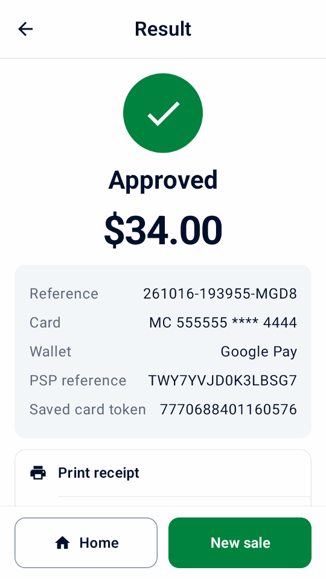

Guide
Try the demo
Try a sample sale, receipt and refund without an Adyen account or terminal.
Install the app
Use an Android 9+ phone or emulator.
- On the device, open the direct
download link, or scan this code with its camera:

- Open the APK on the device and allow installation from your browser or file manager when Android asks.
- On the welcome screen, select Try a demo, then tap Continue.
Make a sample sale and refund
- On Home, tap New sale and select one sample product.
- Tap Charge, check the total, then tap Pay.
- Review the receipt.
- Open History, select the sale, then tap Refund. Select a full refund and confirm.


Explore more demo scenarios
- In Settings › Simulator, choose the payment outcome, the delay and whether a printer is available. Turn on Offline approvals to see offline warnings in History and terminal reconciliation.
In Settings › Data and transfer, use Add sample data or Remove sample data. Samples are labeled as demos. Samples count in demo day totals and reports; adding them replaces receipt business details with a fictional café and adds its logo when none is set. Removing them keeps your own products, history, settings and logo.
Payment links work offline without API credentials, and their screens and receipts are labeled as demos. Their QR codes cannot take payments; tap Simulate payment to complete one.
The simulator shows how Mini mPOS behaves, not what your terminal or Adyen account supports. Features such as audio guidance, offline approvals and Adyen capabilities are imitated, so test them on a real TEST terminal before relying on them.
The demo also offers terminal tips and Adyen Giving at checkout with their switches off, and an SVS gift card in Gift cards. Its sample history shows a tip, a donation, an offline approval and a card saved for customer reference CUST-1042, which you can charge from Tokens. In Settings › Simulator, set a Surcharge, or a Partial approval (%) below 100, to try those flows; at 100, amounts ending in 139 are approved in part, as with Adyen’s test card. When you set up real payments, Mini mPOS offers to turn these demo features off unless you keep them.
Continue to real setup
Ready to connect? In Settings › Simulator, tap Set up real payments, then Continue to setup. Confirming TEST or LIVE deletes all local history; sample products and receipt details stay, so remove samples and review the receipt business details before real payments. Start with TEST.